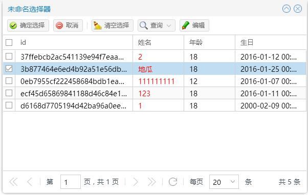

ChooserGirdWindow
介绍
表格选择器窗口

示例代码
Ext.define('App.demo.chooser.ChooserGridWindow',{
init: function(){
var view = Ext.create('Ins.chooser.ChooserGirdWindow',{
//确认选择后的回调函数
onSelect: function(selection){
console.log("确认选择事件");
console.log(selection);
//selection拥有以下属性
// selection.length;
// selection.idSer;
// selection.idArr;
// selection.records;
alert("选择的id有"+selection.idSer+"名字："+selection.records[0].data.name);
},
//选择前
onBeforeSelect: function(){
console.log("选择前");
alert("选择前事件");
//返回值类型boolean，true：程序继续往下执行，false：程序终止执行后面的操作，不写返回值时和false等效
return true;
},
//展示前清除选中
beforeShowClear: true,
//以下属性对应普通表格的属性
//选择模式：MULTI、SINGLE
selectMode : "MULTI",
url : CTX_PATH + '/module/crudgrid/loadAll',
//列数组
fields: ['id','name','age','birthday'],
//实际列
gridColumns: [{
text: 'id',
dataIndex: 'id',
width: 230
},{
text: '姓名',
dataIndex: 'name',
width: 100
},{
text: '年龄',
dataIndex: 'age',
width: 100
},{
text: '生日',
dataIndex: 'birthday',
flex: 1
}
],
pkField : "id",
hidePagingBar: false,
pageSize: 20,
loadOnShow: true,
actionButtons: [{
text: '编辑',
iconCls: 'icon-edit',
handler: function(){
Message.msg("编辑");
}
}],
actionButtonsSort: [],
valueMapper: {
name : function(val, metaData, record, index) {
//参数说明：val：当前单元格的值，metaData:当前单元格的元数据，
//record:当前行，index:当前行的下标(从0开始)
// metaData.style = "background-color: #C7EDCC";
// console.log(record.data);
// console.log(index);
return ""+val+"";
}
},
condition:{
fields:[{
text: '用户名',
name: 'name'
},{
text: '生日',
xtype: 'ins_datefield',
name: 'name'
}]
}
});
view.show();
return null;
}
});
类名
Ins.chooser.ChooserGirdWindow
别名
ins_choosergridwindow
继承自
Ins.window.Window
构造对象
var view = Ext.create('Ins.chooser.ChooserGirdWindow',{
//选择后的回调函数
onSelect: function(selection){
console.log("确认选择事件");
console.log(selection);
//selection拥有以下属性
// selection.length;
// selection.idSer;
// selection.idArr;
// selection.records;
alert("选择的id有"+selection.idSer+"名字："+selection.records[0].data.name);
},
//选择前
onBeforeSelect: function(){
console.log("选择前");
alert("选择前事件");
//返回值类型boolean，true：程序继续往下执行，false：程序终止执行后面的操作，不写返回值时和false等效
return true;
},
//展示前清除选中
beforeShowClear: true,
//以下属性对应普通表格的属性
//选择模式：MULTI、SINGLE
selectMode : "MULTI",
url : CTX_PATH + '/module/crudgrid/loadAll',
//列数组
fields: ['id','name','age','birthday'],
//实际列
gridColumns: [{
text: 'id',
dataIndex: 'id',
width: 230
},{
text: '姓名',
dataIndex: 'name',
width: 100
},{
text: '年龄',
dataIndex: 'age',
width: 100
},{
text: '生日',
dataIndex: 'birthday',
flex: 1
}
],
condition:{
fields:[{
text: '用户名',
name: 'name'
},{
text: '生日',
xtype: 'ins_datefield',
name: 'name'
}]
}
});
属性
| 属性名 | 属性值类型 | 描述 | 默认值 |
|---|
| beforeShowClear |
boolean |
展示前清除选中 |
true |
| url |
String |
表格加载数据请求地址 |
null |
| fields |
String[] |
列数组 |
[] |
| gridColumns |
Object[] |
实际列 |
[] |
| pkField |
string |
主键字段 |
'id' |
| loadOnShow |
boolean |
是否自动加载数据 |
true |
| hidePagingBar |
boolean |
是否隐藏分页工具 |
false |
| actionButtons |
Object[ ] |
工具栏按钮 |
[] |
| actionButtonsSort |
String[ ] |
工具栏按钮排序 |
[ ] |
| valueMapper |
Object |
valueMapper: {
name : function(val, metaData, record, index) {
//参数说明：val：当前单元格的值，metaData:当前单元格的元数据，
//record:当前行，index:当前行的下标(从0开始)
return ""+val+"";
}
},
|
null |
| selectMode |
String |
选择模式：多选MULTI、单选SINGLE |
"MULTI" |
| condition |
Object |
condition : {
fields:[{
text: '用户名',
name: 'name'
},{
text: '生日',
xtype: 'ins_datefield',
name: 'name'
}],
onBeforeSearch:function(form){
console.log(form);
// alert(form.getField('name').value);
return true;
},
buttonText : "自定义查询",
columnSize : 1,
defaultFieldWidth : 200
}
|
{ } |
方法
事件
| 返回值 | 事件名称 | 绑定方法 | 描述 |
|---|
| selection |
onSelect |
function(selection){ } |
确认选择后的回调函数
selection拥有以下属性
selection.length;
selection.idSer;
selection.idArr;
selection.records;
|
| boolean |
onBeforeSelect |
function(){ } |
确认选择前事件。返回值类型boolean，true：程序继续往下执行，false：程序终止执行后面的操作，不写返回值时和false等效 |